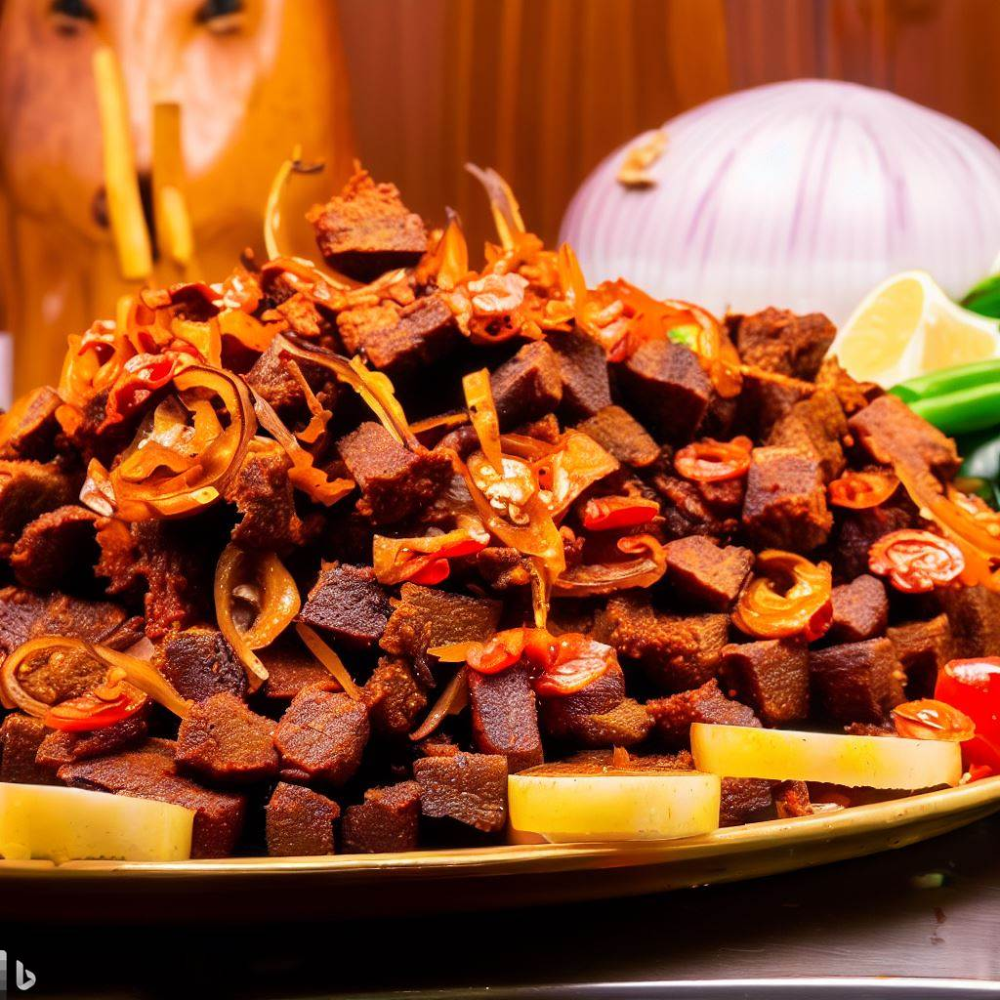

A Journey of Passion, Flavours, and Cultural Heritage.

At SuyaLicious, our story is one deeply rooted in passion, flavours,
and the celebration of Nigerian cultural heritage. It all began with a
simple idea - to bring the authentic taste of Nigeria to food
enthusiasts around the world. Inspired by the vibrant street food
scene and the rich culinary traditions of our homeland, we embarked on
a journey to create a dining experience that would transport people to
the bustling markets and sizzling grills of Nigeria.
With meticulous attention to detail, we sourced the finest ingredients
and mastered the art of blending traditional Nigerian spices. Our
dedicated team of chefs honed their skills, perfecting the techniques
of grilling succulent meats and creating mouthwatering vegetarian
delights. Every dish at SuyaLicious is a labor of love, capturing the
essence of Nigerian cuisine with every bite. But our story doesn't end
with the food alone. We are proud to share the warmth of Nigerian
hospitality and culture with our guests.
From the moment you step through our doors, you'll be greeted by a
vibrant ambiance that reflects the spirit of Nigeria - a place where
flavours, music, and laughter intertwine to create unforgettable
memories. Join us on this extraordinary culinary journey as we invite
you to be part of our story. From our humble beginnings to becoming a
destination for food lovers and cultural explorers, SuyaLicious is a
testament to our unwavering commitment to excellence, authenticity,
and the sheer joy of sharing the taste of Nigeria with the world.
SuyaLicious was born, laying its foundation as a humble street food vendor, serving mouthwatering suya to locals and garnering a loyal following.
SuyaLicious expanded its reach by opening its first physical restaurant, providing a welcoming space for customers to indulge in the authentic flavours of Nigeria and experience the vibrant suya culture.
SuyaLicious embraced technology and customer convenience by launching an online ordering system, allowing customers to easily place their suya orders from the comfort of their homes during the lockdown and enjoy hassle-free pickups or deliveries.
SuyaLicious expanded its menu offerings to include a wider range of Nigerian delicacies, catering to diverse palates and providing customers with a comprehensive dining experience that celebrates the rich culinary heritage of Nigeria. Additionally, new locations were established, bringing the irresistible taste of SuyaLicious to even more communities.
Monday to Saturday
08:00AM to 11:00PM
Sunday
11:00AM to 09:00PM
10 Adeola Oyekan Street,
Victoria Island,
Lagos, Nigeria.